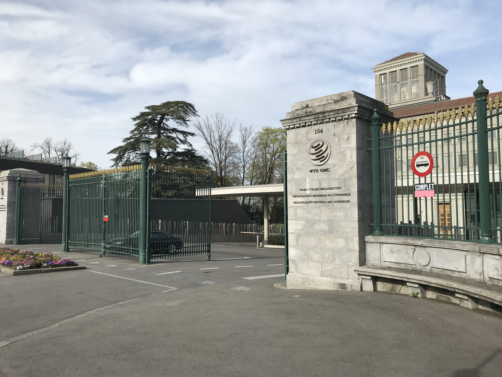

How the World Trade Organization (WTO) Works and Uzbekistan's Membership: An Explainer
The WTO is the international body that sets the rules of world trade, built on tariff reduction and non-discrimination. Here is how it was created, how it is structured, how it settles disputes, and where Uzbekistan's accession bid — ongoing since 1994 — now stands.

The World Trade Organization (WTO) is the single global body that regulates trade between nations under common rules. It began operating on 1 January 1995 and is headquartered in Geneva, Switzerland. The WTO's core tasks are to negotiate trade rules, oversee their application, and settle trade disputes among its members (Source: Britannica — World Trade Organization; WTO — Understanding the WTO).
GATT history and the 1995 founding
The WTO did not appear out of nowhere. In 1947 leading trading nations signed the General Agreement on Tariffs and Trade (GATT), setting the ground rules of the multilateral trading system. For nearly half a century GATT ran negotiating rounds that gradually cut tariffs, but it worked as a provisional agreement rather than a full international organization. At the close of the Uruguay Round (1986–1994) a permanent institution — the WTO — was created to replace GATT, and it began operating on 1 January 1995 as GATT's successor (Source: USTR — History of the WTO; Britannica — World Trade Organization).
Core principles: Most-Favoured-Nation and National Treatment
The WTO system rests on two main non-discrimination principles. The first is Most-Favoured-Nation (MFN): if a member grants any advantage (such as a lower tariff) to a product from one country, it must immediately and unconditionally extend the same advantage to like products from all other WTO members — no playing favourites. The second is National Treatment: once a foreign good has entered the market, it must be treated the same as a domestically produced good. These two principles form the backbone of WTO law (Source: WTO — Principles of the Trading System; METI — MFN Treatment Principle).

Structure and the Geneva headquarters
The WTO is a member-driven organization in which decisions are usually taken by consensus. Its highest body is the Ministerial Conference, which normally meets every two years. Day-to-day business is run by the General Council, made up of representatives of all member states; it also convenes as the Dispute Settlement Body and the Trade Policy Review Body. Administrative work is carried out by the Secretariat in Geneva, led by the Director-General. The headquarters is housed in the Centre William Rappard building in Geneva (Source: WTO — WTO organization; Britannica — World Trade Organization).
How trade rounds and agreements work
WTO rules are produced through multilateral negotiations — trade rounds. Members agree on tariffs, subsidies, services trade (GATS), intellectual property (TRIPS), and agriculture, and formalize them as binding agreements. Each member submits a schedule of commitments on its tariffs. The Doha Round launched in 2001 stalled on many issues, though separate deals were later reached in some areas — for example the 2013 Trade Facilitation Agreement and negotiations on fisheries subsidies (Source: WTO — Understanding the WTO; Britannica — World Trade Organization).
The dispute settlement system
One of the WTO's most important features is its rules-based system for settling trade disputes. If one member accuses another of breaking the rules, the case goes to the Dispute Settlement Body (DSB). A panel first examines the case and issues findings; a dissatisfied party could appeal to the Appellate Body, a standing body of seven members. If a country is found to be in breach, it must bring its measures into line with the rules or accept trade compensation to the injured party. In recent years the Appellate Body has been unable to function fully because new members were not appointed — a pressing problem for the system (Source: WTO — Dispute Settlement; Britannica — World Trade Organization).
How accession works
Joining the WTO is a long, complex process. An applicant state first files a formal application, after which a Working Party is set up to examine its trade regime. The state submits a memorandum describing its economic and trade policies, answers hundreds of questions from members, and aligns its legislation with WTO rules. In parallel it conducts bilateral market-access negotiations with interested members over tariffs and services commitments. Once all negotiations are complete and the Working Party report is ready, the accession package is approved; after the applicant's parliament ratifies it, the country becomes a full member. With East Timor and the Comoros joining in 2024, the WTO reached 166 members (Source: WTO — Accessions; WTO — Members and Observers).
Uzbekistan's accession journey
Uzbekistan filed its WTO membership application quite early — in December 1994 — and a Working Party to examine it was set up that same year. But the process stayed sluggish for years and effectively stalled: the closed, state-controlled economic policy of the Islam Karimov era did not fit the openness and market reforms the WTO requires. As a result, from the mid-2000s negotiations largely halted, producing a gap of roughly fifteen years (Source: Eurasianet — Uzbekistan making a push to gain WTO membership; The Diplomat — Will Uzbekistan's 31-Year Effort to Join the WTO Finally Pay Off?).
The economic reforms under President Shavkat Mirziyoyev revived the process: from 2020 Uzbekistan actively resumed negotiations on membership terms. In recent years Working Party meetings have been held regularly — the 13th meeting on 27–28 July 2026 and the 11th on 5–6 November 2025. Uzbekistan answered hundreds of questions, aligned nearly 190 laws and regulations with WTO requirements, and concluded bilateral negotiations with many countries (Source: WTO — Accession news 27 July 2026; Gazeta.uz — Uzbekistan reaffirms commitment to finalize WTO accession in 2026).
As of autumn 2026, Uzbekistan is not yet a full WTO member — the process is in its final stage. The country has concluded bilateral market-access deals with 31–33 of the 34 interested members and deposited the documents with the WTO Secretariat; a few remaining negotiations and the Working Party report are still to be finalized. Uzbekistan had planned to complete accession by the 14th Ministerial Conference (MC14) held in Yaoundé, Cameroon in March, but that deadline was missed. Officials say they aim to finalize membership within 2026, though no firm date has been announced (Source: WTO — Accession news 27 July 2026; Gazeta.uz — Uzbekistan plans to become full WTO member in 2026).

Sources
- WTO — Understanding the WTO (What is the WTO)
- Britannica — World Trade Organization
- USTR — History of the WTO, Part One
- WTO — Accession of Uzbekistan, Working Party news (27 July 2026)
- Gazeta.uz — Uzbekistan plans to become full WTO member in 2026
- The Diplomat — Will Uzbekistan's 31-Year Effort to Join the WTO Finally Pay Off?